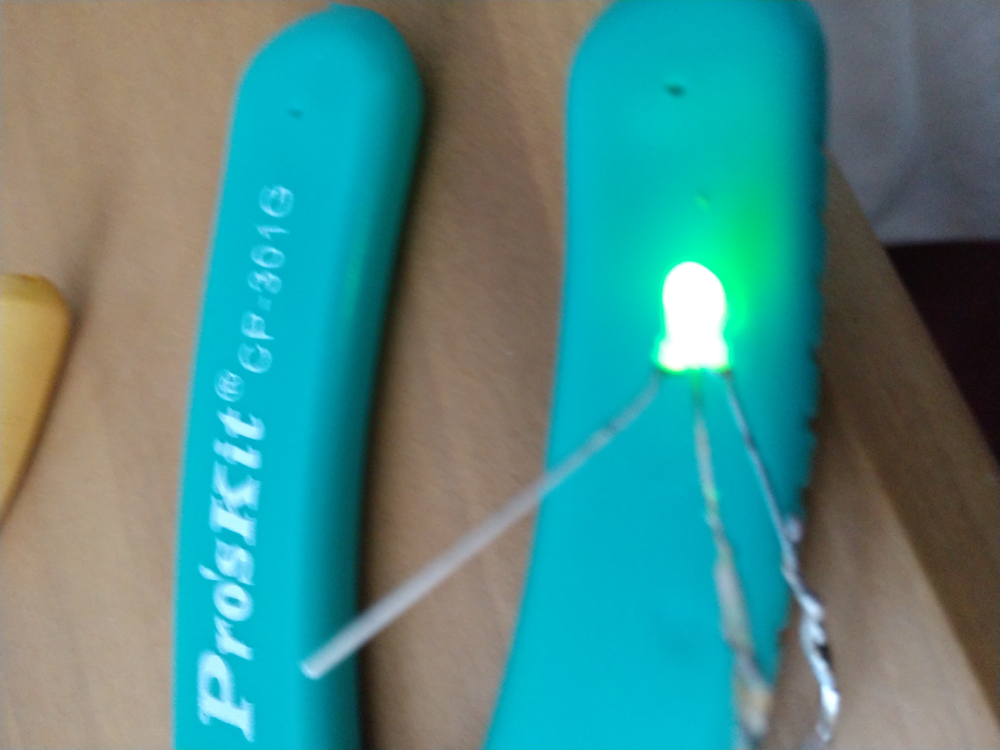
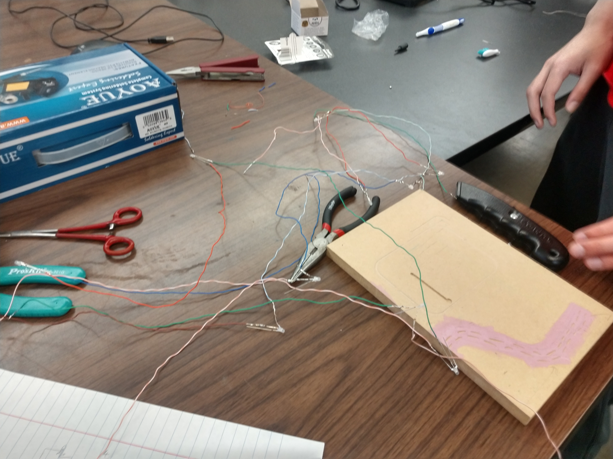
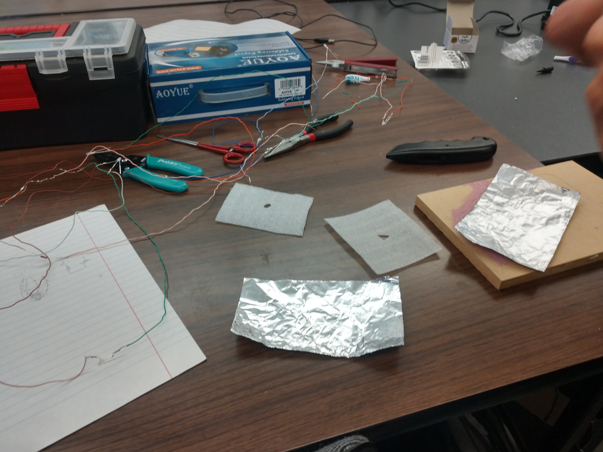
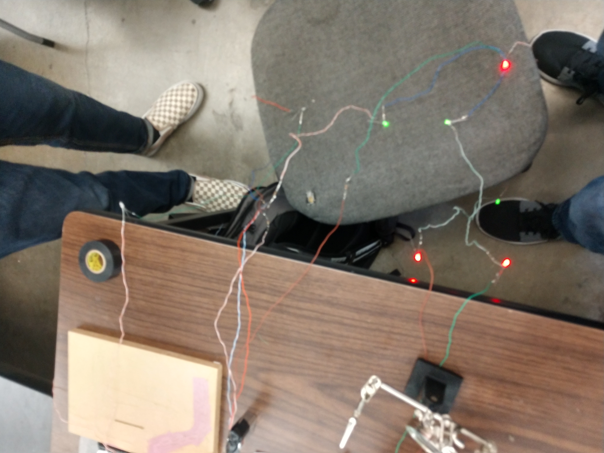
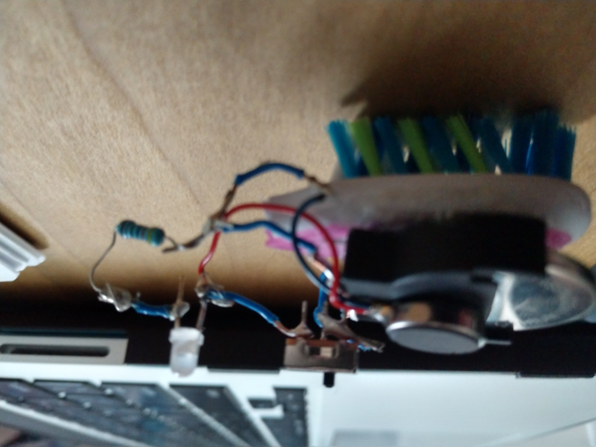
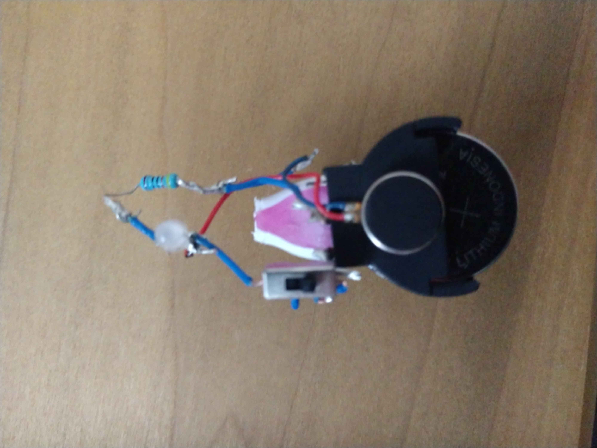

BrushBot
Video
Pictures
     Artist Statment
My brushbot was a hesitant experience at first; worried about the wires and parts being overheated by the soldering process. It felt good with how it was working after every part was put together. Observing the vibrating brush reminds of what could’ve been improved, had I cut the wires shorter or used less wires. The experience was reflective and enjoyable.